《姑苏繁华图》，原名《盛世滋生图》，清乾隆二十四年（1759）由苏州籍宫廷画师徐扬完成进呈。徐扬字云亭，家住阊门专诸巷，乾隆十六年（1751）帝南巡时献画获赏识，入宫如意馆供职，钦赐举人。他早年曾参与《苏州府城图》测绘，熟悉故乡大街小巷——这幅画因此不仅是艺术品，更像一部纪实的"清代苏州影像志"。
画卷自灵岩山起笔，经木渎、渡石湖、历上方山，穿狮、何两山间入郡城，过盘、胥、阊三门，出阊门转山塘，至虎丘收笔——"一村、一镇、一城、一街"，绵延数十里湖山市井尽收一卷。原藏清宫，著录于《石渠宝笈续编》，后由溥仪携出，几经流散，今为辽宁省博物馆镇馆之宝、国家一级文物。
自西向东 · 点击塔名直达图鉴
卷首灵岩山上有寺无塔（详见"冷知识"）；四塔依次登场：石湖段塔影娉婷的楞伽塔、盘门水陆城门旁的瑞光塔、阊门内远望所见的北寺塔，以及全卷收笔处视线的最终归宿——虎丘云岩寺塔。
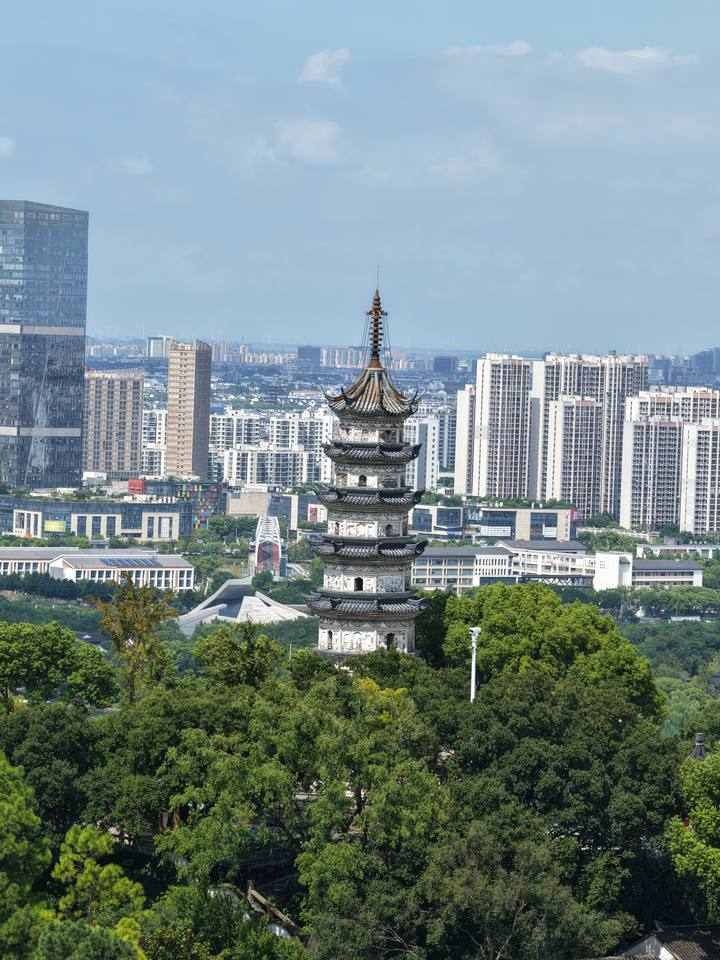
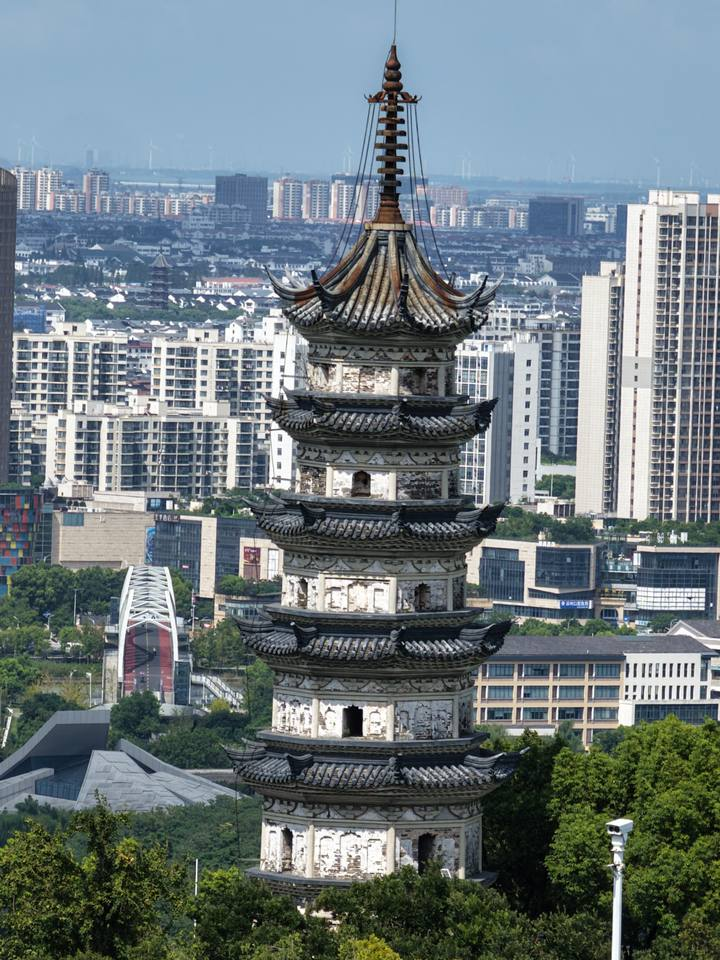
隋大业四年，吴郡太守李显于上方山巅营造七层宝塔，以九舍利置其中。唐会昌五年（845）毁于灭佛，北宋太平兴国三年重建——塔砖至今存有"太平兴国三年""戊寅岁重建"铭文。明万历二十八年（1600）雷火大作，塔檐皆毁而砖甓独存；崇祯九年（1636）再修。今塔身微向西倾，是苏州第二斜塔；论年纪仅次于虎丘塔，故又称苏州第二古塔，与虎丘塔并称"姐妹塔"。
石湖段是长卷中"轻快的田园牧歌"：行春桥、越城桥与楞伽塔同框，田畴禾苗、渔场农舍历历在目。今日从越城桥上望塔影，与徐扬笔下渐渐重叠。乾隆南巡曾雨中游上方山，留有诗作；山下治平寺即隋代新郭城治所，寺内越公井相传为杨素所浚。
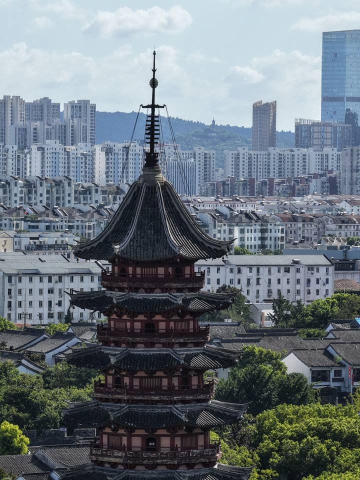
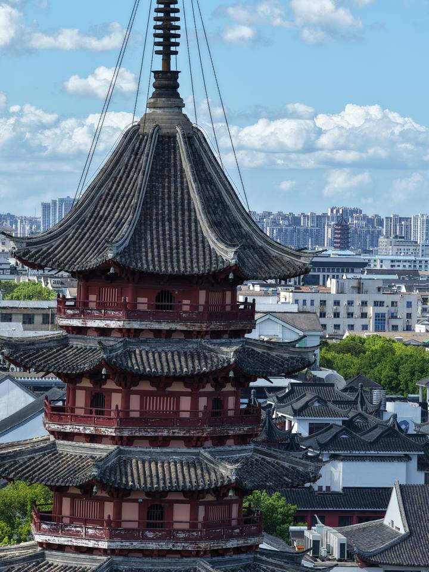
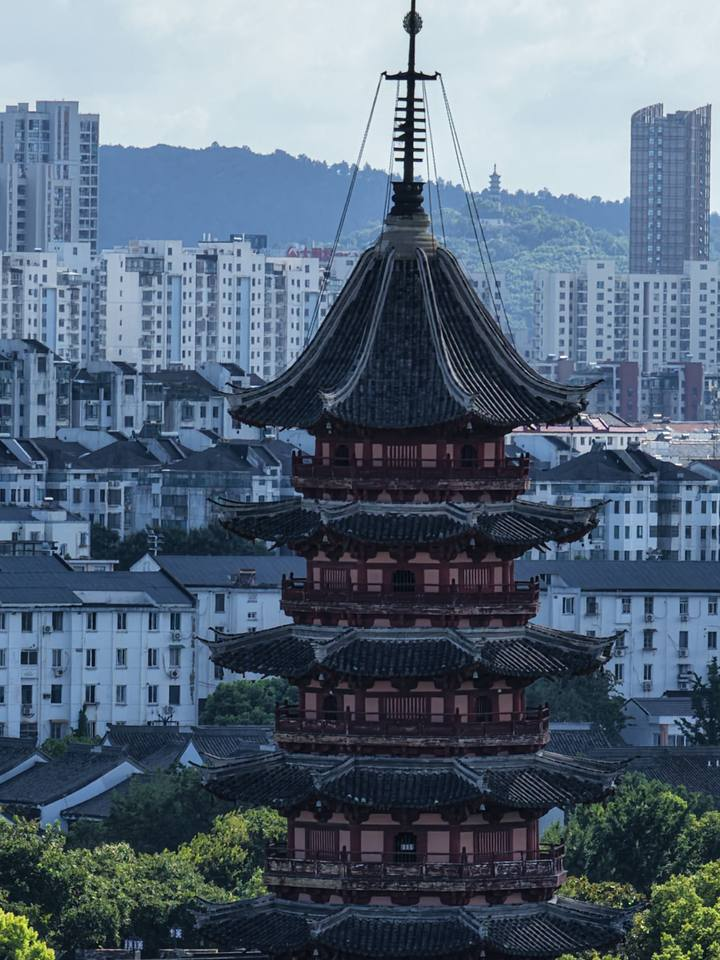
赤乌四年（241），西域康居国高僧性康远来吴郡讲经，吴大帝孙权为迎他建普济禅院；六年后，孙权为报母恩，于寺中建十三级舍利塔——这是瑞光塔的前身，也是苏州史上较早的佛塔。今塔为北宋所建，塔身砖砌基本为宋代原构，底层塔心"永定柱"做法在现存古建筑中罕见。
瑞光塔吸取了虎丘塔地基失稳的教训：以石灰膏泥分层固结地基，底层砖砌转角处垫大磉石二十四块——故建塔近千年，基本没有下沉与倾斜。江南宋代以后建塔，多以瑞光塔为标准，它代表了宋代砖木混合楼阁式塔的成熟典范。
1978年，塔的第三层砖龛中发现一批晚唐五代至北宋佛教文物，其中真珠舍利宝幢高122.6厘米，用珍珠四万余颗编串，幢内藏舍利九颗，八面缀纯金编龙八条、塔顶银龛坐佛……工艺之精令人咋舌，与碧纸金书《妙法莲华经》等同为苏州博物馆镇馆重器。
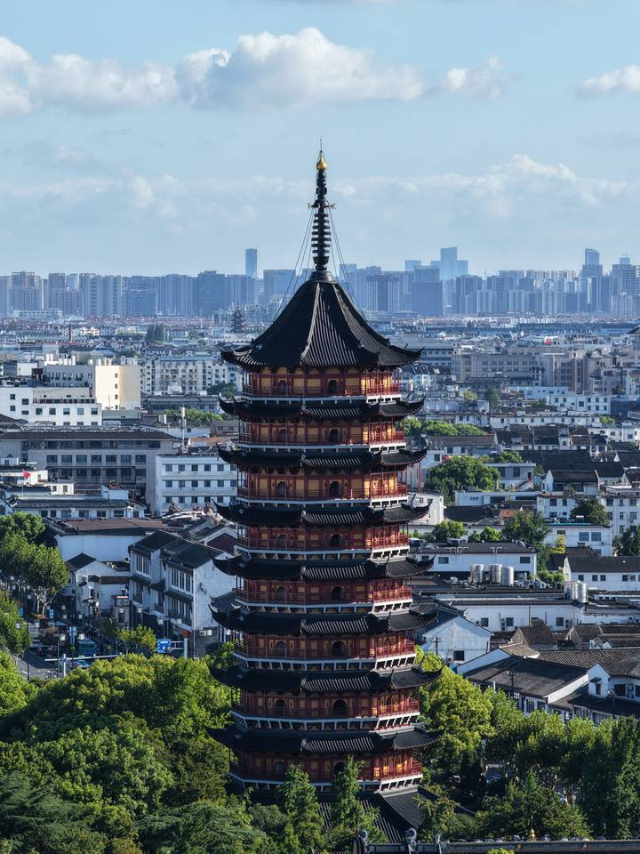
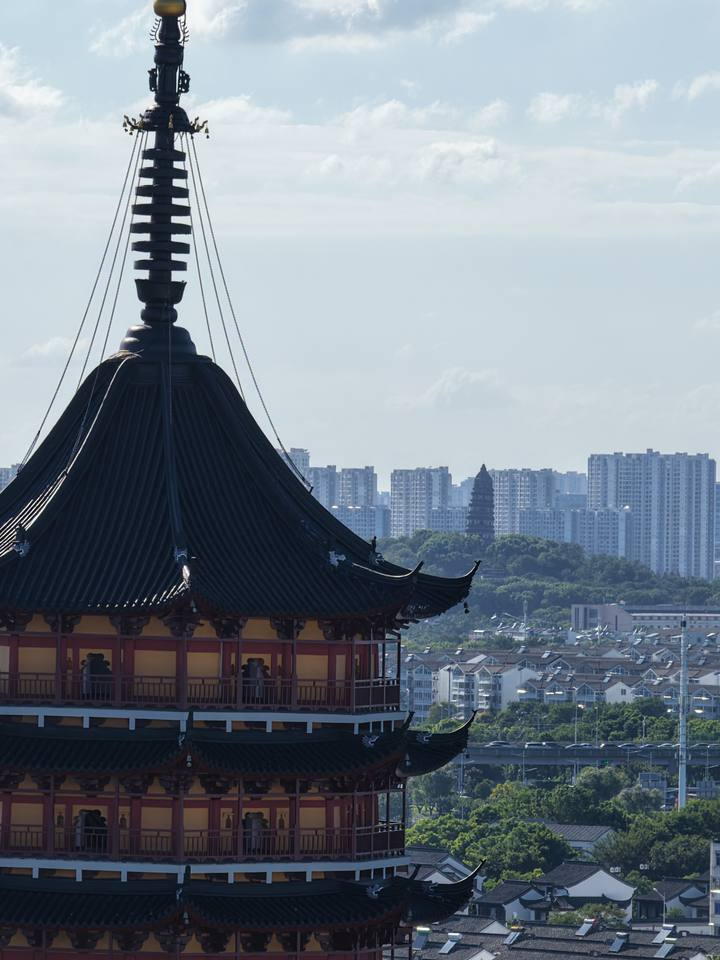
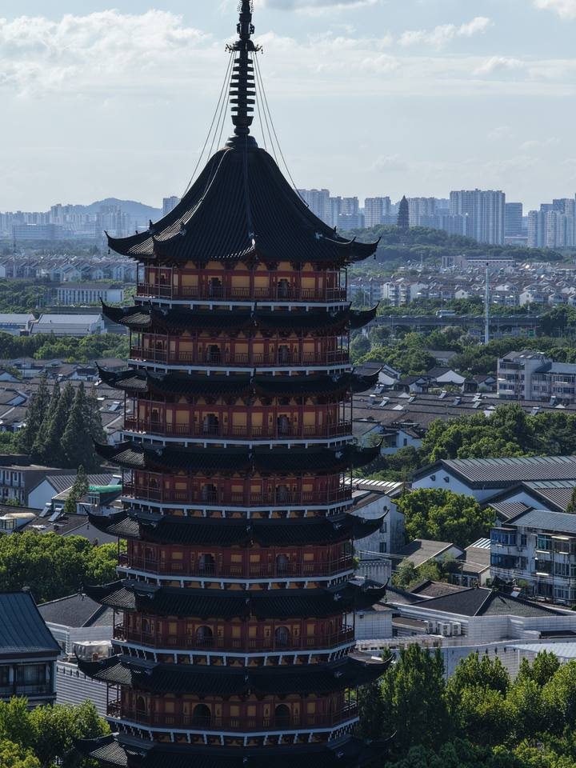
北寺塔雄踞古城南北中轴，通高约76米，是苏州古塔高度之最，峻拔雄奇，"为苏州诸塔之冠"。老苏州有言："未进苏州城，先见北寺塔"——在没有高楼的年代，它就是古城的第一地标。至今姑苏古城内建筑高度仍不得超过25米——约北寺塔三层之高，这是苏州人守了半个多世纪的天际线。
相传孙权为报乳母养育之恩建寺立塔，"报恩"之名由此而来——与瑞光塔"报母恩"的传说遥相呼应，一座城的两座塔，都从"感恩"起笔。今塔为南宋绍兴年间遗构，塔基须弥座石刻精湛，金甲护法力士、卷草如意纹饰犹存宋风。寺内另有张士诚记功碑等元末遗物。
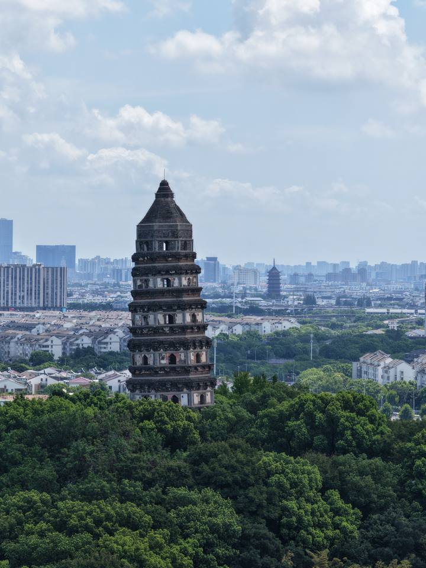
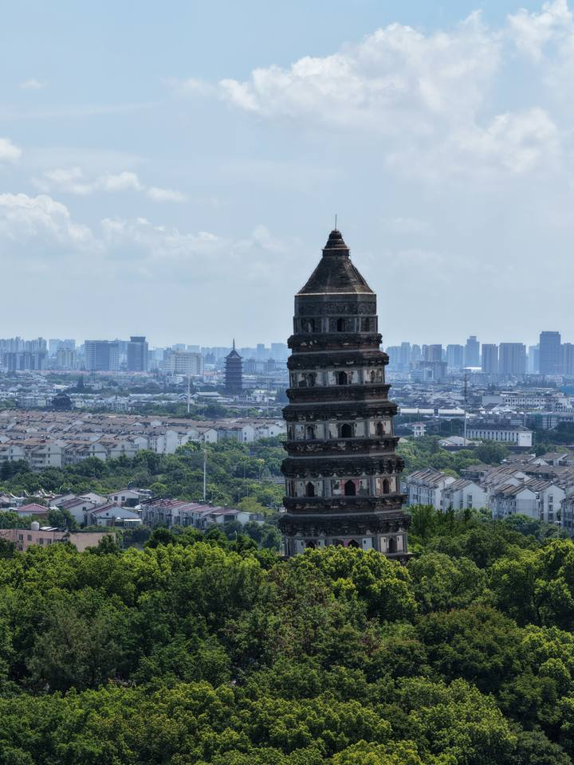
虎丘塔建于山顶松土之上，建成就开始倾斜——塔顶中心偏离底层中心2.34米，倾斜约2°48′，却屹立千年不倒，被称为"中国第一斜塔""东方比萨斜塔"，比比萨斜塔还年长百馀岁。它是江南现存最古老的砖塔、苏州唯一保存至今的五代建筑，塔内斗拱、宋式彩绘遗存犹在。
1957年二至四层维修时，塔内发现大批唐末五代吴越文物：佛经、佛像、织锦、铜器……其中最耀眼的，是出自第三层天宫的越窑秘色瓷莲花碗——"九秋风露越窑开，夺得千峰翠色来"，现为苏州博物馆镇馆之宝。
徐扬以虎丘收笔：山塘河蜿蜒七里，彩云、普济二桥之后，古塔在山顶巍然入画——康乾之际虎丘寺宇处处、殿阁重重，"远观有如山在寺中"。整幅长卷的万千繁华，最终都归于这一塔之影。
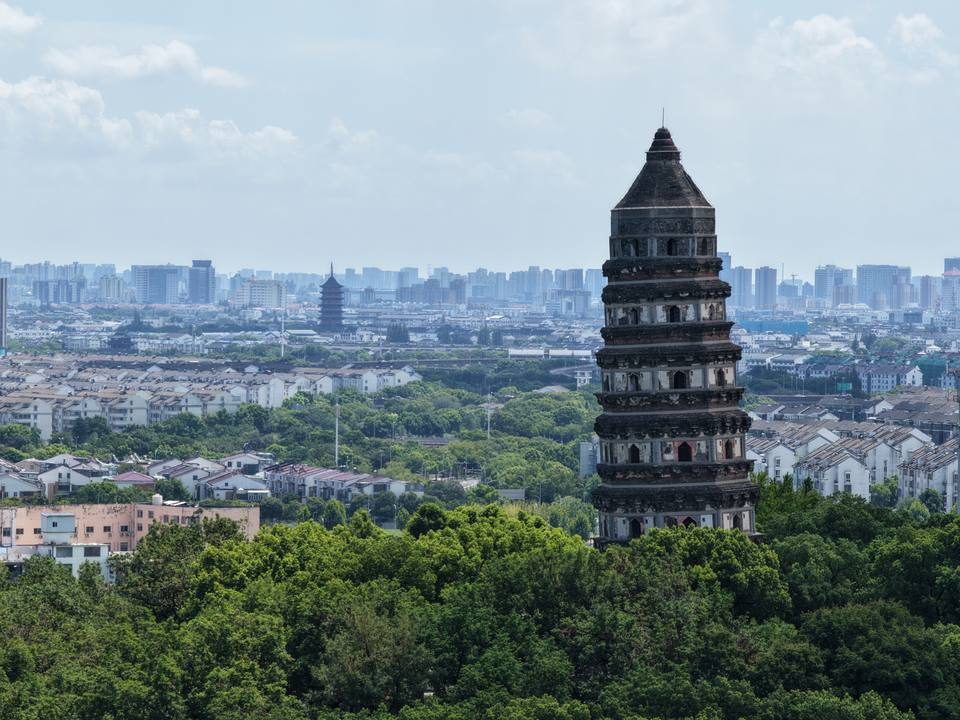
近塔斜而不倒、远塔正而守中。">虎丘塔｜虎丘山风景名胜区（"运河十景"之一）——剑池、银杏大道与斜塔同游。
北寺塔｜报恩寺（免费），地铁4号线北寺塔站——古城中轴起点，可串联拙政园、苏州博物馆。
瑞光塔｜盘门景区——"盘门三景"（水陆盘门、吴门桥、瑞光塔），可游船环城河。
楞伽塔｜上方山国家森林公园——登上方山望石湖，行春桥、越城桥、治平寺一线同游。
看真迹｜《姑苏繁华图》真迹2026年7月起于苏州博物馆西馆"姑苏繁华"特展展出（时隔二十年回乡），参观信息以苏博官方公告为准。
推荐路线：效仿徐扬自西向东——上午上方山·石湖（楞伽塔），午后盘门（瑞光塔）、北寺塔，黄昏山塘街至虎丘（虎丘塔）收尾，一日走完画中四塔。